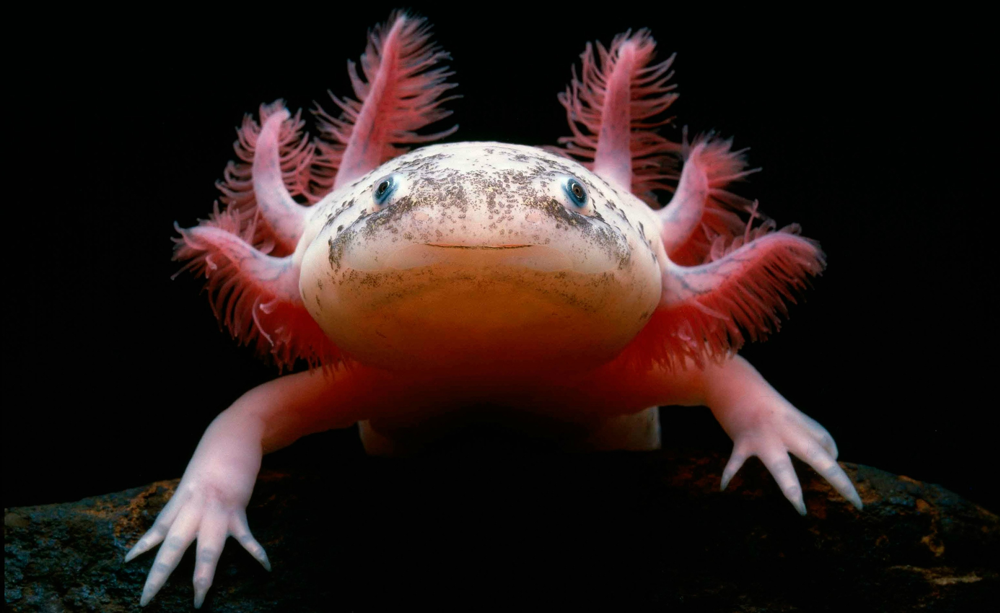

Found exclusively in the lake complex of Xochimilco (pronounced SO-chee-MILL-koh) near Mexico City,
axolotls differ from most other salamanders in that they live permanently in water.
In extremely rare cases, an axolotl will progress to maturity and emerge from the water, but by and large,
they are content to stay on the bottom of Xochimilco’s lakes and canals.
Close relatives of the tiger salamander, axolotls can be quite large, reaching up to a foot in length,
although the average size is closer to half that.
They are typically black or mottled brown, but albino and white varieties are somewhat common,
particularly among captive specimens.

Axolotls are long-lived, surviving up to 15 years on a diet of mollusks, worms, insect larvae, crustaceans, and some fish.
Accustomed to being a top predator in its habitat, this species has begun to suffer from the introduction of large fish into its lake habitat.
Natural threats include predatory birds such as herons.